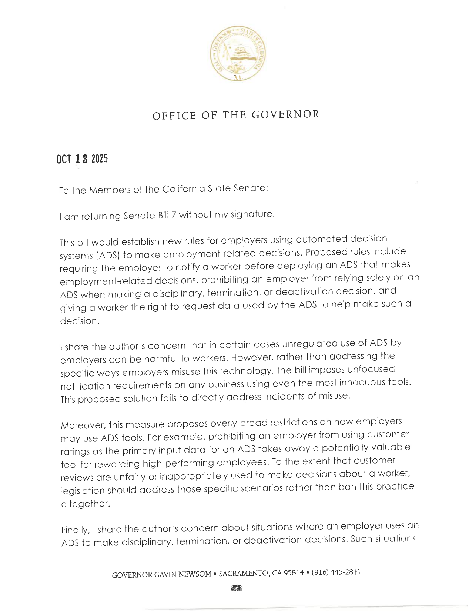

Executive Summary
캘리포니아 의회가 자동화 의사결정 시스템만으로 직원을 징계하거나 해고하지 못하게 하는 법안을 통과시켰다. 8월 30일 하원, 8월 31일 상원을 지나 9월 4일 등록된 SB 947이다. 별칭은 「No Robo Bosses Act」이고, 아직 주지사 서명 전이다. 이 글은 그 조문이 고용주에게 실제로 무엇을 요구하는지를 본다.
요구는 두 갈래인데 둘 다 같은 것을 전제한다. 하나는 시스템 출력에 주로 의존해 결정했다면 사람이 그 출력을 만들 때 수집되거나 쓰인 데이터로 결정을 뒷받침해야 한다는 것이고, 다른 하나는 노동자가 자기 데이터에 대한 의미 있고 객관적인 설명을 요구할 수 있다는 것이다. 둘 다 그 순간의 데이터를 나중에 다시 꺼낼 수 있어야 성립한다. 그런데 조문 어디에도 그 데이터를 얼마나 보존하라는 규정은 없다.
4절까지는 캘리포니아주 의회가 공개한 법안 원문 두 건과 의결 기록, 그리고 주지사가 상원에 보낸 거부권 메시지 원문에 적힌 것만 따라간다. 5절에서 데이터 실무 쪽으로 옮겨 적는 부분은 그 문서들에 없는 이 글의 해석이다.
주요 수치
500달러
위반 1건당 민사 벌금
§1526.1(e). 노동청과 공적 검사가 집행하고, 같은 조 (d)는 징벌적 손해배상과 변호사 비용도 열어 둔다
2027년 7월
법이 효력을 갖는 날
§1526.7이 정한 1일. 등록은 9월 4일, 주지사 서명 기한은 9월 30일이다
3가지
시스템에 아예 못 맡기는 일
§1522(a). 법령 위반, 보호 신분 추론, 권리 행사에 대한 보복 예측
0개
보존 기간을 정한 조항
설명과 재확인은 의무인데, 그 근거를 얼마나 남기라는 조항은 없다
무엇이 통과됐나
SB 947은 캘리포니아 노동법(Labor Code) 제2편에 제5.5.5부를 새로 넣는다. 1520조부터 1526.7조까지 열한 개 조문이고, 규율 대상은 고용주가 징계와 해고를 결정하는 순간이다. 승진이나 보상 결정은 들어가지 않는다. 적용 범위에는 사업장 규모 제한이 없고, 정부 기관과 인력공급업체도 고용주에 포함된다.
비켜 가는 자리도 조문에 적혀 있다. 1526.5조는 단체협약이 이 부의 적용을 명확한 문언으로 포기하고, 임금과 근로조건을 직접 정하고, 알고리즘 관리로부터의 보호를 따로 제공하는 경우에 한해 협약 당사자를 적용 대상에서 뺀다. 포기만으로는 부족하고 대체 보호를 함께 내놓아야 한다. 1526.6조는 국가 공역에서 쓰는 항공기 개발, 그리고 안보·군사·우주·국방 목적의 제품 개발에 연방 법령이나 연방 계약이 요구하는 범위까지만 적용을 면제한다. 1526.3조는 다른 방향인데, 이 법의 통지 요건을 지킨 고용주는 다른 주법의 비슷한 통지 조항을 중복해 지키지 않아도 된다고 정한다. 다만 노동법 2100조가 말하는 할당량이나 근로조건에 적용되는 다른 자동화 기준에는 그 면제가 미치지 않는다.
법이 규율하는 대상은 1520조가 정의한다. 자동화 의사결정 시스템, 줄여서 ADS다.
“any computational process derived from machine learning, statistical modeling, data analytics, or artificial intelligence that issues simplified output, including a score, classification, or recommendation, that is used to assist or replace human discretionary decisionmaking and materially impacts natural persons. An automated decision system does not include a spam email filter, firewall, antivirus software, identity and access management tools, calculator, database, dataset, or other compilation of data.”
기계학습만 가리키는 말이 아니다. 통계 모델링과 데이터 분석이 나란히 적혀 있고, 점수나 분류나 권고안처럼 단순화된 출력을 내어 사람의 재량적 판단을 돕거나 대신하면 그 범위에 든다.
같은 조항은 빠지는 것도 따로 센다. 스팸 필터, 방화벽, 백신, 계정 관리 도구, 계산기, 데이터베이스, 데이터셋, 그 밖의 데이터 모음이다. 그래서 경계는 그 도구를 무엇이라 부르는지가 아니라 그것이 무엇을 내놓는지에 그어져 있다. 근태 기록을 쌓아 두기만 하는 데이터베이스는 빠진다. 같은 기록으로 위험 점수를 매겨 관리자 화면에 띄우는 대시보드는 단순화된 출력을 내므로 들어간다. 콜센터 품질 평가나 생산성 순위도 같은 자리에 선다. "우리는 AI를 안 쓴다"는 답이 이 조문 앞에서 잘 통하지 않는 이유가 여기 있다.
핵심 금지는 1522조 (b)(1)에 한 줄로 적혀 있다.
“An employer shall not rely solely on an ADS when making a disciplinary or termination decision.”
같은 조 (a)는 시스템에 아예 맡길 수 없는 세 가지를 따로 세운다. 노동·안전·고용·인권 관련 법령을 어기거나 그 준수를 막는 일, 정부법 12940조가 정한 보호 신분을 추론하는 일, 그리고 노동자가 법적 권리를 행사할 것을 예측해 불이익을 주는 일이다. 통과부터 시행까지의 일정은 다음과 같다.
| 날짜 | 일어난 일 |
|---|---|
| 2025년 10월 13일 | 전신인 SB 7에 뉴섬 주지사가 거부권을 행사 |
| 2026년 2월 2일 | 제리 맥너니 상원의원이 범위를 좁혀 SB 947로 재발의. 레예스 상원의원, 칼라·워드 하원의원이 공동발의로 이름을 올렸다 |
| 3월 26일 ~ 8월 21일 | 상·하원을 오가며 수정안 여덟 차례 |
| 8월 30일 | 하원 통과. 찬성 53, 반대 14, 기권 12 |
| 8월 31일 | 상원이 하원 수정안에 재가결. 찬성 29, 반대 10, 기권 1 |
| 9월 4일 | 등록(enrolled). 주지사에게 넘어감 |
| 9월 30일 | 주지사 서명 기한 |
| 2027년 7월 1일 | §1526.7이 정한 시행일 |
거부권 날짜는 주지사가 상원에 보낸 거부권 메시지에 찍힌 날짜이고, 나머지는 법안 원문과 의회가 공개한 의결 기록에 남은 것이다. 표차의 기권은 의사록 표기로 투표 미기록(NVR)에 해당한다. 서명 여부는 이 글을 쓰는 시점까지 정해지지 않았다.
사람이 다시 확인한다는 말
금지 조항만 읽으면 대응이 쉬워 보인다. 시스템이 낸 결론에 관리자 서명 한 칸을 붙이면 "단독 의존"은 아니게 된다. 그런데 바로 다음 항이 그 우회로를 막는다. 시스템 출력에 주로 의존해 결정한 경우, 고용주는 사람에게 이렇게 시켜야 한다.
“a human to corroborate the decision using data that was collected or used to produce the ADS output or other relevant corroborating or supporting information.”
재확인의 재료가 조문에 못 박혀 있다. 그 출력을 만들 때 수집되거나 쓰인 데이터, 또는 그에 준하는 뒷받침 정보다. 조문은 관리자 평가, 인사 기록, 업무 산출물, 동료 평가, 목격자 면담을 받아들일 수 있는 재료로 든다. 마지막 항목에는 관련 있는 온라인 고객 후기가 들어갈 수 있다는 단서가 붙어 있어, 플랫폼 노동의 평점 기록을 염두에 둔 조항임이 드러난다. 이 목록은 예시일 뿐 닫혀 있지 않다고 조문이 스스로 밝힌다. 그래도 앞 문장의 제약은 그대로 남는다. 무엇을 쓰든 결정을 뒷받침하는 정보여야 하고, 결론을 읽고 수긍했다는 진술은 그 조건을 채우지 못한다.
뒷받침에 실패했을 때의 처리도 1522조 (c)에 적혀 있다.
“If an employer cannot corroborate the ADS output, or the human reviewer has concluded that the ADS output is inaccurate, incomplete, or misleading, the employer shall not use the ADS output to make a disciplinary or termination decision.”
여기서 "확인할 수 없다"와 "확인해 보니 틀렸다"가 같은 결과로 묶인다. 근거 데이터를 찾지 못한 쪽도, 찾아서 읽어 보니 부정확하거나 불완전하거나 오해를 부른다고 판단한 쪽도, 그 출력을 결정에 쓸 수 없다. 6개월 전 성과 점수를 만든 원본 로그가 이미 지워졌다면 그 점수는 법적으로 쓸 수 없는 재료가 된다는 뜻이다. 조문은 데이터를 보존하라고 명령하지 않는다. 대신 보존하지 않은 쪽의 출력을 쓰지 못하게 한다.
1524조는 결정 시점에 서면 통지를 하나 더 얹는다. 시스템이 주로 쓰였다는 사실, 사람이 그 출력을 뒷받침했다는 사실, 문의처, 그리고 이 법에 따른 권리를 행사해도 보복받지 않는다는 안내를 담아야 한다. 평이한 말로 쓴 별도 문서여야 하고, 회사가 직원과 평소 소통할 때 쓰는 언어로 적어야 한다. 두 번째 항목이 특히 무겁다. 재확인을 했다고 회사가 서면으로 적어 건네는 순간, 그 진술은 나중에 대조당할 수 있는 기록이 된다. 1526조는 보복 금지를 해고·강등·정직을 포함해 다시 못 박는다.
그리고 이 모든 요건의 무게를 결정하는 조항이 집행 부에 따로 있다. 1526.1조 (c)다.
“once it has been demonstrated that an ADS was used to make a disciplinary or deactivation decision, the employer must demonstrate that the employer did not primarily rely upon an ADS or that the employer complied with Sections 1522 and 1524 when making the disciplinary or termination decision.”
입증 책임이 고용주 쪽으로 넘어간다. 노동자가 대야 하는 것은 그 결정에 시스템이 쓰였다는 사실까지다. 그다음부터는 고용주가 증명해야 한다. 주로 의존한 것이 아니었다고 보이든지, 아니면 1522조와 1524조를 지켰다고 보이든지 둘 중 하나다. 둘 다 결정 당시의 기록을 꺼내 놓는 방식으로만 증명된다.
이 조항이 앞의 모든 의무를 성격이 다른 것으로 바꾼다. 재확인과 통지는 지키면 좋은 절차가 아니라, 분쟁이 생겼을 때 지켰음을 회사가 스스로 입증해야 하는 항목이 된다. 기록이 없다는 것은 증거가 없다는 뜻이고, 이 구조에서 증거가 없는 쪽은 고용주다.
노동자가 받는 설명
두 번째 요구는 1522조 (d)에 있다. 시스템을 주로 써서 징계나 해고를 결정했다면, 노동자는 자기 데이터에 대한 설명을 요구할 수 있고 고용주는 그것을 내주어야 한다.
“An employee shall have the right to request, and an employer shall provide, a meaningful, objective description of the employee's own data used by the ADS when an employer has primarily used an ADS to make a disciplinary or termination decision.”
모델이 어떻게 작동하는지를 설명하라는 조항이 아니다. 요구 대상은 그 노동자 자신의 데이터다. 그리고 1520조가 정의한 employee data의 범위가 넓다. 직원을 식별하거나 그와 관련되거나 그를 기술하는 모든 정보이며, 수집됐든 추론됐든 다른 방식으로 얻어졌든 상관없다고 적혀 있다. 추론된 값이 명시적으로 포함되니, 모델이 중간에 만들어 낸 이탈 위험 점수나 태도 지표도 그 사람의 데이터다. 원본 입력만 챙겨 두는 것으로는 이 요구를 채우지 못한다.
같은 조의 첫 항이 이 방향을 한 번 더 넓힌다. ADS 출력을 정의하면서 정보와 데이터뿐 아니라 가정, 예측, 점수, 권고, 결정, 결론까지 나열한다. 최종 점수 하나만 출력으로 치는 것이 아니라 그 점수에 이르는 도중에 시스템이 세운 가정과 예측도 출력에 든다는 뜻이다. 중간 산출물을 로그에 남기지 않고 버리는 설계는 이 정의 아래에서 불리해진다.
조건이 하나 더 붙는다. 1522조 (e)는 그 설명을 내줄 때 고객과 다른 직원과 제3자의 개인정보를 익명 처리한 형태로 제공하라고 요구한다. 근거 데이터 묶음을 통째로 넘기는 길이 막힌 셈이다. 어느 값이 이 사람에게서 나왔고 어느 값이 옆자리 동료나 고객에게서 나왔는지를 항목 단위로 가를 수 있어야 그 요구를 충족할 수 있다.
이 조항이 실무에 요구하는 것은 설명 능력이 아니라 분해 능력이다. 결정에 쓰인 데이터를 사람 단위로 갈라내려면 각 값이 누구에게서, 언제, 어떤 경로로 들어왔는지가 값 옆에 붙어 있어야 한다. 데이터 계보를 쌓아 두지 않은 조직에서는 설명문을 잘 쓰는 일로 해결되지 않는다.
작년에 막힌 법이 올해 통과한 이유
SB 947은 처음 나온 법안이 아니다. 전신인 SB 7이 2025년에 의회를 통과했고, 뉴섬 주지사는 10월 13일 서명하지 않은 채 상원으로 돌려보냈다. 함께 보낸 거부권 메시지는 규제 없는 시스템 사용이 노동자에게 해로울 수 있다는 발의자의 우려에 공감한다고 먼저 적고, 그다음 반대 이유를 세 갈래로 들었다. 첫째, 오용의 구체적 방식을 겨냥하는 대신 "가장 무해한 도구를 쓰는 사업체에까지 초점 없는 통지 요구"를 얹는다. 둘째, 제약이 지나치게 넓다. 그 예로 고객 평점을 시스템의 주된 입력으로 쓰지 못하게 막은 조항을 들며, 성과가 좋은 직원을 보상할 수단까지 없앤다고 적었다. 셋째, 징계와 해고에 시스템을 쓰는 상황에 대한 우려에는 자신도 동의하지만 그 상황이 곧 나올 주 개인정보보호국 규정에 일부 덮이니 "이 영역에서 새 법을 제정하기 전에 그 규정이 이 우려들을 다룰 만한지부터 따져 보아야 한다"는 것이었다.

맥너니 의원은 2026년 2월에 다시 냈다. 두 법안의 원문을 나란히 놓으면 무엇을 덜어 냈는지가 드러난다.
| 항목 | SB 7 (2025, 거부) | SB 947 (2026, 통과) |
|---|---|---|
| 보호 대상 | worker. 직원과 독립계약자를 함께 포함 | employee. 고용된 사람 |
| 규율하는 결정 | 징계, 해고, 계정 비활성화 | 징계, 해고 |
| 사용 전 통지 | 작업장에서 ADS를 쓴다는 사실을 미리 고지(채용 결정은 제외) | 없음 |
| 결정 시점 통지 | 있음 | 있음. 1524조 |
| 노동자의 데이터 권리 | 최근 12개월치 자기 데이터 사본 청구. 12개월에 한 번 | 자기 데이터에 대한 설명. 1522조 (d) |
| 고객 평점 입력 제한 | 고객 평점을 ADS의 유일하거나 주된 입력 데이터로 쓰는 것을 금지 | 없음 |
| ADS 정의와 제외 목록 | 있음 | 같음. 문장이 동일하다 |
두 법안의 leginfo 등록본·최종본 원문을 직접 대조한 결과다.
좁아진 것은 보호 대상과 결정의 종류, 통지의 시점, 그리고 입력 데이터에 걸려 있던 제한이다. 정의는 좁아지지 않았다. ADS 정의도, 스팸 필터부터 데이터셋까지 이어지는 제외 목록도 두 법안의 문장이 같다. 거부 메시지가 이름을 들어 지목한 두 조항은 나란히 사라졌다. 무해한 도구까지 묶는다던 사용 전 통지 의무가 빠졌고, 고객 평점을 주된 입력으로 못 쓰게 하던 조항도 빠졌다. 정의를 고치는 대신 의무를 덜어 내는 방식이다. 넓게 금지하기를 포기하고 좁게 절차를 지정하는 쪽으로 방향이 바뀌었고, 그만큼 컴플라이언스 부담이 문서 작업에서 기록 관리 쪽으로 옮겨 갔다.
고객 평점이 조문에서 아예 사라진 것은 아니다. 2절에서 본 뒷받침 정보 목록에는 그 항목이 그대로 남아 있다. 없어진 것은 평점을 시스템의 주된 입력으로 쓰지 못하게 하던 제한뿐이다. 사람이 결정을 확인할 때 평점을 참고하는 쪽은 열어 두고, 시스템이 평점만 보고 점수를 내는 것을 막던 조항은 걷어 냈다는 뜻이다.
데이터 권리가 교체된 대목은 이 글의 주제와 곧장 맞물린다. SB 7은 사본을 내주라고 했고 SB 947은 설명을 내주라고 한다. 사본 의무는 사라졌는데 뒷받침 의무와 설명 의무는 남았다. 원자료를 그대로 건넬 필요는 없어졌지만 원자료 없이는 둘 중 어느 쪽도 이행되지 않는다. 참고로 일부 법률 해설이 SB 947의 내용으로 소개하는 "12개월마다 데이터 열람권"은 SB 7의 조항이고, 등록본에는 없다.
지운 자국도 한 군데 남아 있다. 입증 책임을 넘기는 1526.1조 (c)는 그 시점을 "징계 또는 deactivation 결정"에 시스템이 쓰였다고 밝혀졌을 때로 적는데, 같은 문장의 뒷부분은 다시 "징계 또는 해고 결정"으로 돌아간다. deactivation은 SB 947 전문에서 이 한 번만 나오고 정의 조항에 뜻이 없다. SB 7에서 여덟 번 쓰이던 말이 옮겨 오는 과정에 한 곳 남은 것으로 보인다.
같은 개념이 서로 다른 법체계로 동시에 들어가고 있다는 점도 눈여겨볼 만하다. SB 947은 노동법에 들어갔다. 그런데 1526.3조가 통지 의무의 중복을 덜어 주자마자 1526.4조가 그 조항에도 불구하고 예외를 둔다. 캘리포니아 소비자 개인정보보호법 적용을 받는 고용주는 주 개인정보보호국의 자동화 의사결정 기술 규정에 그대로 묶인다는 것이다. 거부 메시지가 "그 규정부터 따져 보자"고 지목했던 바로 그 규정이 이번에는 예외 조항의 자리에 들어앉았다. 한 회사가 같은 시스템을 두고 노동법과 개인정보보호법 양쪽에 답해야 하는 구조는 그대로 남았다. 콜로라도가 AI법을 개인정보 프레임으로 갈아탄 사례, AI발 해고를 신고 항목으로 만든 규정들, 한국과 EU의 자동화 결정 설명·거부권을 나란히 놓으면 축이 보인다. 규제의 초점이 모델의 성능에서 결정의 기록으로 내려오고 있다.
페블러스가 이 법을 주목하는 이유
여기서부터는 조문을 떠나, 데이터를 다루는 쪽에서 이 법에 같은 눈금을 대어 본다. 이 법이 고용주에게 요구하는 것은 윤리 선언이 아니다. 사람이 결정을 뒷받침하려면 시스템이 무엇을 근거로 삼았는지가 남아 있어야 하고, 노동자에게 자기 데이터의 설명을 내주려면 그 데이터에 출처와 계보가 붙어 있어야 한다. 설명 의무는 실무에서 보존 의무와 추적 의무로 번역된다.
그런데 조문에는 그 번역이 적혀 있지 않다. 1520조부터 1526.7조까지 어디에도 기록을 몇 년 남기라는 규정이 없다. 보존 기간을 정해 주지 않은 채 보존해야만 이행할 수 있는 의무만 세워 둔 구조다. 전신 법안에 있던 "최근 12개월"이라는 표현마저 사본 청구권과 함께 빠지면서, 기간을 가리키는 말은 이 부에서 완전히 사라졌다.
그래서 이 법의 진짜 부담은 벌금표에 있지 않다. 건당 500달러만 놓고 보면 큰 금액이 아니다. 물론 그 숫자가 노출의 전부도 아니다. 1526.1조 (d)는 이 법으로 제기된 민사 소송에서 가처분과 함께 징벌적 손해배상, 변호사 비용까지 청구할 수 있게 열어 두었다. 다만 금액을 키우는 것도 결국 같은 조건에 달려 있다. 앞 절에서 본 (c)항이 증명할 사람을 고용주로 지정해 두었기 때문이다. 부담의 실체는 노동청 조사나 소송에서 "그때 무엇을 보고 그렇게 결정했는지 보여 달라"는 요구를 받았을 때, 그 자리에서 아무것도 꺼내지 못하는 상황 쪽에 있다.
미국에 법인이 없어도 남의 일이 아니다. 성과 관리와 근태 분석에 점수 모델을 붙이는 조직이라면 같은 질문을 이미 받고 있다. 이 법이 한 주 안에서도 바닥을 고르게 깔았다는 점은 두 조항에서 보인다. 1526.2조는 더 강한 보호를 두는 시·군 조례를 그대로 살려 두고, 법안 제2절은 이 법이 지방 사무가 아니라 주 전체의 관심사이므로 헌장시를 포함한 모든 시에 적용된다고 못 박는다. 더 세게 갈 지방 정부는 열어 두고, 빠질 지방 정부는 막아 둔 셈이다. 시행일까지 남은 기간은 시스템을 바꾸기에 짧지 않지만, 지금 쌓이지 않고 있는 로그는 그때 가서 소급해 만들 수 없다.
- 1년 전 성과 점수를 지금 다시 만들 수 있는가. 그 점수를 만든 입력과 모델 판본이 함께 남아 있는지부터 확인한다.
- 한 사람의 평가에 쓰인 값 가운데 동료와 고객에게서 온 것을 항목 단위로 가려낼 수 있는가. 못 가려내면 설명을 내줄 수 없다.
- 모델이 중간에 만들어 낸 추론 값을 저장하고 있는가. 조문의 정의에서는 그 값도 그 사람의 데이터다.
- 인사 데이터의 보존 주기를 누가 정했는가. 지금 그 숫자를 정한 사람은 대개 법무팀이 아니라 저장 비용을 보던 사람이다.
- 사람이 재확인했다는 사실 자체를 무엇으로 남기고 있는가. 결재 이력만 남기는 조직은 누가 어떤 자료를 보고 판단했는지를 나중에 보일 방법이 없다.
여기까지 읽어 주셔서 감사하다. 이 글이 인용한 조문은 캘리포니아주 의회 법안 페이지에서 누구나 원문으로 읽을 수 있다. 여러분의 조직에서는 작년 인사 결정의 근거를 지금 어떤 기록으로 되짚고 계신지 나눠 주시면 좋겠다.
참고문헌
법안 원문·공식 문서
- 1.California State Legislature. (2026-09-04). SB-947 Employment: automated decision systems. (등록본) leginfo.legislature.ca.gov
- 2.California State Legislature. (2025). SB-7 Employment: automated decision systems. (전신 법안, 거부됨) leginfo.legislature.ca.gov
- 3.Newsom, G. (2025-10-13). Governor's Veto Message on Senate Bill No. 7. Office of the Governor, State of California. gov.ca.gov
법률 자문 해설
- 4.Crowell & Moring LLP. (2026). California SB 947 ("No Robo Bosses Act"): New Proposed Guardrails on Use of Automated Decision Systems in Employer Discipline and Termination Decisions. crowell.com
- 5.Fisher Phillips LLP. (2026). Bills California Employers Should Watch as Governor Newsom's Final Term Comes to an End. fisherphillips.com